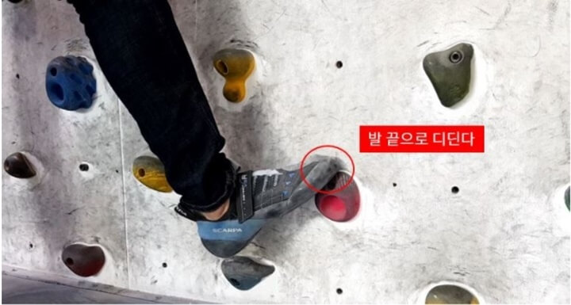
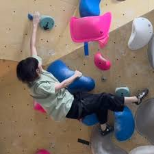

클라이밍 기술들
- 인사이드 스텝 : 엄지발가락 지문으로 홀드를 딛는 방법
-
좌우로 전진할때는 팔로 당겨서 이동하는것 보다,
나아가고자하는 방향의 반대발로 밀어서 진행하는 연습이 중요하다
- 신체의 전면이 벽과 평행하게 이동하여 가까워지는 큰 장점이 있다.

- 아웃사이드 스텝 : 신체의 측면이 벽을 향하여 진행하는 기술
-
인사이드 스텝으로 진행하기에 힘이 많이드는 상황(손홀드와 발홀드가 일직선이되는 상황)에서 사용되는 기술
- 검지발가락과 중지발가락으로 홀드를 딛는다.
- 균형을 유지하는 방법을 중점적 연습하는것이 중요하다
